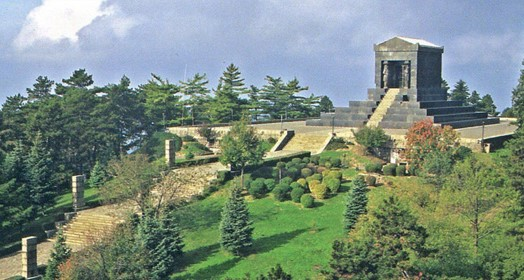
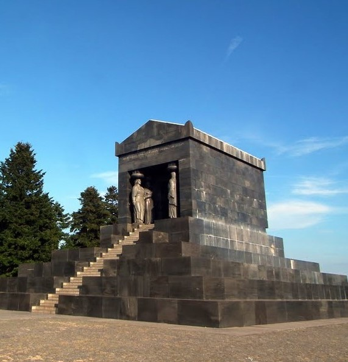

Споменик Незнаном јунаку

Подизање Споменика Незнаном јунаку и стварање култа у вези са тим, започето је у Француској после 1. светског рата,када је безимени војник,који је погинуо у великој бици код Верденске тврђаве(Верденска битка 21.феб-јул 1916), добио вечно пребивалиште на Јелисејским пољима у Паризу испред Тријумфалне капије.Пламен је први пут упалио тадашњи министар рата Андре Мажино 1923. године,на Дан примирја у 1. светском рату-11.новембра.
Једног србског ратника,погинулог приликом одбране Београда 1915. сахранили су аустроугарски војници и поставили натпис: "Ein unbekannter Serbische Soldat"- Непознати србски војник.Шест година касније,за време градње железничке пруге Топчидер-Мала Крсна-Пожаревац,радници су пронашли тај гроб.Установљено је да је
реч о младом војнику,без значке са именом и ознаке јединице,што је значило да је одмах убачен у борбу.Лежао је на немачкој гранати од 10кг као узглављу,у џепу је имао три старе дводинарке са ликом Краља Петра,а цокуле добијене од савезника имале су уместо пертли телеграфску жицу.Цела лева страна грудног коша била је разнета,а лобања оштећена.
Народ подавалских села одлучио је да непознати војник буде достојно сахрањен и већ 1922.,по пројекту архитекте Милана С.Минића,подигнут је Споменик палим у ратовима 1912-1918.,на месту где се данас налази Заставни стуб-јарбол и трајао је свега 16.година све док није изграђен садашњи.Камени крст са споменика који је срушен,пренет је у цркву Свете Марије Магдалене у Белом Потоку.Главни разлог за уклањање тог споменика и прављење новог био је тај што се сматрало да по својој скромности не одговара значају којег је симболизовао,па је формиран Државни одбор за подизање новог.
Жрнов,град тврђава,миниран је по наредби Краља Александра I Карађорђевића, 18.јуна 1934. у његовом присуству и у присуству синовца Николе,сина кнеза Павла Карађорђевића,да би се на врху заравнало и на том месту подигао Споменик Незнаном јунаку.После праска,испод зидина средњевековног града пронађени су темељи римског утврђења,а у њему спремиште тј. чатрња са још чистом,питком и хладном водом и зидана пећ за хлеб пуна пепела.Споменик-маузолеј је о свом трошку и уз посебно састављену јединицу војске зване"Авалски одред" подигао Краљ Александар као своју задужбину,о чему сведочи и натпис на чеоном делу споменика,који је 50.година био прекривен:"Александар I Краљ Југославије-Незнаном јунаку".
Камен темељац положен је на Видовдан 1934. и у њега узидана повеља:"Во имја Оца,Сина и Светога Духа,Ми,Александар I Краљ Југославије,положисмо на Видовдан 28.јуна 1934.године камен темељац Споменика Незнаном јунаку у ратовима 1912-1918.године за ослобођење и уједињење Јужних Словена.Овај споменик,као своју задужбину,подижемо по нацрту Ивана Мештровића,за вечан помен изгинулим ратним друговима и за светао пример будућим покољењима Југословенским.Амин,Александар I ."
